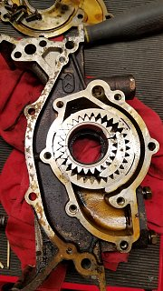
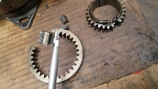
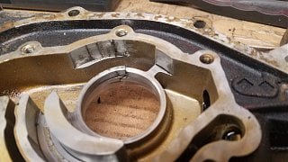

-
XTigga, you can go to a VG30 computer, and run NisTune.
it will require significant EFI/Wiring, re-pinning of the ECU plugs, and some hard component swaps - it is possible, but it is a lot of work -
Just a quick question for anyone who has done a VG33 swap into their Z31. I have recently purchased one from a '98 Pathfinder, and I've been trying to rig up a way to do a compression test on the engine before I tear it down and do a rebuild for boost. The issue I am having is with a Z31 starter lining up with the flywheel. I am using a stock VG30E flywheel, bolted to a stock VG33E block, mounted on the starter bracket that bolts to the side of the engine block. I can't seem to get it to line up, though. It seems just a hair off. Has anyone else had this issue? When I get back home, I'll take a picture to show what I'm talking about.1985 300ZX Z31 2+2 VG33ET (running!) -
All of the accessories and mounting brackets on a Pathfinder are on the opposite side from what you need.Originally posted by albionwanderer86 View Post
If you are going to try to find a way to reuse your Z31 accessories by machining the crank, it doesn't matter. Otherwise you are about to find yourself spending a few months buying lots of cheap brackets and accessory parts and paying a load for shipping. I paid as much for my parts and shipping as I did for my JDM engine.~Joe (not a mechanic!) -
I am going to swap in a VG30E crankshaft and camshafts, so accessories aren't an issue. I will be using a VG30 water pump, alternator, p.s. pump, etc. It has been done without any complications, just read Texas_Ace's post. My question pertains specifically to the starter. I believe either my starter bracket is slightly bent, or just needs a spacer or something to put it in the correct position.Last edited by albionwanderer86; 03-19-2018, 07:26 AM.1985 300ZX Z31 2+2 VG33ET (running!) -
I used my VG30e starter and flywheel on my VG33e Pathfinder engine. It just bolted on there.~Joe (not a mechanic!) -
I'm thinking the issue is with the mounting bracket itself. The second bolt hole is currently empty, as the threads in that hole on the block are a bit buggered. I think once I clean them out with a tap, I should be able to mount up everything properly.
IMG_0407.JPG
IMG_0408.JPG
IMG_0409.JPG
IMG_0410.JPG1985 300ZX Z31 2+2 VG33ET (running!)-
 #186.1Dunkine commentedWhen I used to do this with chevy V8's, I would use the bell housing to bolt the starter up. Course they had carbs and I could actually start them on the ground.
#186.1Dunkine commentedWhen I used to do this with chevy V8's, I would use the bell housing to bolt the starter up. Course they had carbs and I could actually start them on the ground. -
I finally got everything to line up decent enough, it required that second bolt being installed and some slight tweaking. I'm fairly certain my mounting plate is a bit bent, or maybe the VG33 block is just ever so slightly different in the casting. Nonetheless, I still wasn't able to do a compression test. The battery I was jumping the starter off seems to run out of juice before I can really spin the engine up to starting rpms. I'm going to hook the starter up to a running car battery one of these days when I get a chance to see if I get any better results. -
Hurry up if it's got a 30 day warranty, want to have a chance to get it back if it's dead in a cylinder.
-
-
So… quick question. Has anyone installed an oil bypass valve on the VG33? I ordered one from Nissan, and tried to install it in mine… it did not go according to plan. I damaged the part, and then had to obliterate it trying to work it back out. Does anyone know the proper "installation" technique for this? Fortunately, the part was only like $6 at the dealership.1985 300ZX Z31 2+2 VG33ET (running!) -
legit bro, you been breaking shit left and right.
this might not be for you
yo u got questions PM me, ill drop my # if you want to text questions -
Alright, first off, I read till my brain seems to want to jump out of my head so trust me I have read before this. I hope my questions aren't stupid or obvious.
I have been reading conflicting information
1. Cranks: it seems the only reason to choose a 30 or 33 crank is ONLY based off the accessories one wants to use. This would mean the 30 and 33 cranks are exactly the same except the snout which means you have to pick one or the other and it's not exactly the best option to machine the crank to work with crank pulley configurations. So here comes the the conflicting part came across a post (of course the pictures aren't there anymore) but the snout broke off, I bet it was a lemon, of a 33 crank and people chiming in the 33 cranks are inferior. Oh it gets better, I have also read that the 33 cranks are superior to 30 cranks in the way of balancing and construction. Supposedly E cranks are nitrided at factory and you have to get them re nitrided if reground.
Side note: the VG30DE has forged crank and rods but are shot peened at the factory and are said to be 100% stronger than if it weren't shot peened. I found this to be a bit odd because that suggests that DE cranks are superior the E cranks but many claim they are only a half step better than an E crank so why bother trying to make it work. I know for a fact (as many know but had to at least see half of the story myself) that E cranks are nodular iron and DE cranks are indeed forged.
2. Oil pumps: so is there a difference between a 30 and 33 pump? If so could someone show pictures of the differences beyond oil filter location? I have yet to see the inside of both. I know what the 30 pumps looks like because I found out mine has a broken gear and surprised my engine that I'm currently rebuilding didn't Granade because of it. Is the ONLY reason to go with a 30 over a 33 solely based on the crank one decides to use? Again there is conflicting information saying that the 33 oil pump is a different style than and thus inferior to the 30 and DE pumps but there is information suggesting that the 33 pumps are superior to 30. As far as E engines go the auto turbo ported oil pumps are superior (supposedly) so why aren't they the norm? Why don't you see or at least I don't "Oh I'm running the ported auto turbo pump" over and over on build threads?
Another side note: supposedly the DE oil pumps are superior to both and physically bigger and there is talk of attempts at adapting a DE pump to ether a 30 or 33 insomuch that there are even cam gear spacers to move the came gears out available on z31online but I haven't found a single instance of someone actually doing it. Why would someone make these spacers if it wasn't profitable? I would think I would have found at least one person adapting a DE oil pump to an E. Or is it a enthusiast thing like Mr.510 crank pulley adapters that are impossible to get because he (Mr.510) can't keep up with demand.
I apologize for the rambling just so vary puzzling.
I am planning on going with a 33 (for obvious reasons) in my 92 pathfinder and want to place the accessories like a 99 pathfinder ware they are basically opposite and lower than they are now. If there is an overwhelming reason not to to use the 33 crank like for instance the (dispite what seems common knowledge) oil pump of the 33 being inferior? But is it inferior? I don't know because I don't know who to take their word. I've asked around but the posts I keep finding are ancient and have yet to receive ananswer.There must be a reason why people are willing to run a 30 oil pump (using the 33 block and heads and pistons and using everything else from the 30 seems to be the overwhelmingly the popular choice) or do they run what they can to keep their accessories the same and will sacrifice having a "inferior" oil pump.
Last edited by Billygoatninja; 12-05-2018, 05:36 AM.Comment
-
1. yes, this decision should be made on the willingness and capability of adapting to the 33 and accessory mounting
1. (sidenote) not really, going psuedo engineer i'd put my bottom dollar on old fashion 20W-50 high zinc for these iron blocks before i dropped a pennies worth of synth in it. There are more opinions on bearing gap but thats a whole 'nother animal
2. yes, the 33 ports and gears are similar in dimension to a VG30ET A/T which flowed better and provided a more stable volume and pressure - sorry i can't reference the thread this was years, and years back.
2. (side note) can't comment on that, dont know
For your final thought - take the info with a grain of salt, everyone has an opinion, these motors are a dime a dozen and very reliable when cared for. Have fun. -
Welp sounds like I'm gonna run a VG33. Crank, block, oil pump and accessories. Looking at the belt diagrams it will work out perfectly with a turbo and some realish headers pointed towards the front and the crossover pipe in front since they will sit low enough for the header (probably the collector) to pass over. Unfortunately pathfinders dont have the room in front of the engine like a z31 if I go that route (33 acc, headers/crossover towards the front) I'll have to put the turbo pretty much right were the air filter box goes. I'm trying to avoid going to a log manifold in an attempt to keep the exhaust flowing in the same direction (hot debate on the internet btw) albeit not equal langth because of space.
So to conclude that ramble running a 33 (pretty much intire engine (with the exception of forged pistions z31 isky reground cams ferrera valves and schnider springs. Of course the works done the crank and rods (re nitride, shot peen, rust inhibitor in the oil passages I may be missing something but yeah))
1. I think we can agree the 33 pump is better than the 30 (standard) and can be had any day from any auto parts retailer.
2. Accories for space (and in think its easier to run a quest altinator)
3. Apparently aftermarket harmonic balancers for the DETT will fit the 33 and probably a good idea to run one.
4. A bump in displacement will help with the turbo some.
I think we can also agree that what crank one decides to use is dependent on accessories and oil pump and there isn't any evidence showing one is inferior to the other generaly speaking. With the treatments to the 30 or 33 crank running a DETT crank probably isn't necessary and if you keep your rpms lower than 6800ish you should be good with your rod bearings not spinning.
Does this count a a mini thread? Trying not to go off the rails here and not detract from the main thread.Last edited by Billygoatninja; 05-04-2019, 12:06 AM. Reason: Misspellings
-
-
I think most people opt for the vg30 crank and oil pump in order to keep the stock accessories in a z31. If you're running a pathfinder, this is moot. As for the oil pumps themselves, there is difference in flow, but unless you're running a high performance build, I doubt the flow differences would be measurable in terms of reliability. From the pictures I've seen, the design of the VG30 and VG33 pumps are the same, with the differences being the depth of the cavities (VG30 turbo auto's being the largest/deepest, hence more flow) and (of course) the size of the hole for the crank snout.
--------------
Legal stuff:
**Nissan Employee**
Any information shared is simply my own opinion and NOT the opinion of Nissan
not legal stuff:
'88 300ZX 2+2-- driving… just details left
'22 Q60RS-- I tell the wife it's hers…
'87 Chaparral bowrider-- the next project
'00 Corolla-- kids car.
'14 E-350-- Gotta haul those kids in something. -
Yes, same except snout. There is an early and late vg30 too (like in the later Quests).Originally posted by Billygoatninja View Post
Large and small snout. Oil pickup tube locations.Originally posted by Billygoatninja View Post
Check out Nissan Nut's page: http://nissannut.com
He has a comparison for the 33 vs 30. http://nissannut.com/maintenance/vg3…are/index.html
And has picture of some of the oil pumps.
http://nissannut.com/maintenance/vg3…er_options.JPG
Last edited by Dunkine; 12-06-2018, 09:55 PM. Reason: Added links -
Eventually I'm going to turbo it so I guess high performance (not going to get into it now) so I would prefer a better pump. I'm in the process of rebuilding the engine at the moment (I wish I could do a 33 but in a bind and don't want to just toss a engine at it in, probably, unknown condition since it has to last for an unknown amount of time). I'm asking because since I plan on turbo I would like to know if the if the 33 pump would suffice and that way I could just get a 33 build it and bingo bango. If not I'll get a 30 crank and auto turbo pump.
I read that article. Doesn't answer my questions.Last edited by Billygoatninja; 12-07-2018, 10:48 PM.Comment
-
Supposedly SATAN did once he got to 600hp. He was on the hunt for better oiling and ultimately swamped in a LS. I think it's a rpm thing. He was probably was pushing higher rpms than what these engines are designed to. There is a reason why the DETT (pretty much identical to ET)makes peak power at about 6500 and peak torque at around 4500. Its probably designed like that on purpose and that would suggest (if it is a rpm thing Nissan knew they didnt need to design an oil pump for high rpm) hence this is also why these engines respond so well to twin turbos, shoving as much air as soon as possible before 6500rpm.
Side note: It seems the only advantage the DETT has over the ET is engine management.
-
The VG33 stock pump, installed with factory tolerances, will sometimes give you shockingly low pressure (like 12PSI) at warm or hot idle. This is just a VG33 "thing" AFAIK, you see pathy guys complaining about it but it's within spec and driving pressures are fine. Personal opinion - the VG3x with a Z31 oil pan does not really have enough oil capacity for a turbo car without an oil cooler, maybe plan on doing one.Comment
-
Hmmmm.... interesting. I'm not sure what the purpose behind that is but it would seem on purpose that nissan would do that. So maybe spinning rod bearings due to oil pressure (too high is my guess or lack thereof not due to the pickup sucking air) hence issues with oiling at high rpm higher than 6500 would be the culprit. The pathfinder isn't any more or may slightly have better in oil capacity. I am going to use an oil cooler and remote oil filter that allows a bigger filter. I had a 88 bronco 2 and its oil filter held a quart. A oil cooler is a must on a turbo car, it just irrespnonsable to not run one. -
This is not true, its a safe wager those claims are high mileage vehicles, passed down, picked up for cheap, ran hard and hung up wet.
Using a new oil pump, 20W-50, from a cold start it will hold upper 20's
It should be noted the Xterra/frontier/pathfinder also had a much lower oil capacity than the Z31. You can also run two longer filters (using cross reference P/Ns) on a 33 to increase capacity by nearly 600cc. Sitting in SEUSA traffic, blazing sun and soft tarmac i have seen 220F oil temps, no cooler. Running hard through the mountains it never peaks 160F. -
@88sin, if you need 20w50 to hold upper 20s on a new oil pump it stands to reason that if you use the recommended 10w30 you're gonna be seeing substantially lower pressures. The FSM for the '96 Pathy (page LC-4) specifies 9PSI as the low end for idle oil pressure (!)
-
-
Edit: please bare with me I'm on my phone and isn't super user friendly.
In case anyone is curious what a broken oil pump looks like. This my have been the culprit of my "rodknock" I thought I had. This is the exact reason the N1 BNR32/33 skylines had upgraded oil pump gears.
They are indeed cast (iron? probably steel it's not aluminum). Any other type of metal forging doesn't brake like that. The N1 upgraded ones are probably machined from some type of billet. This is what happens when you put a fragile cast rotating thing in an aluminum case. I have my speculations why nissan would do that and I'll leave that up to your intrupritation, seems silly and all the over engineered /built nature that is nissan I would think they wouldn't overlook something like this. Remember there are TEAMS of engineers for stuff like this and not one thought of that? Hmmmmm....
Anywho there there you have it. I bet this happens more often than what is documented on the internet. Someday I'll have a at home machine shop and I can make stronger gears.
I know this doesn't have much to do with the 33 specifically but it seems most performance nissan engines (which is practically all of them) have this exact problem and all VGs are no different at least up until the VQ came out.
  Last edited by Billygoatninja; 12-11-2018, 02:49 PM. -
I had this in a comment above but according to the '96 Pathy service manual, page LC-4, minimum idle oil pressure is 9PSI. Z31 is 11. That's with 10w30. Just an FYI.

{kind=link}
Copyright © 2006–. All rights reserved. Privacy Policy
Comment